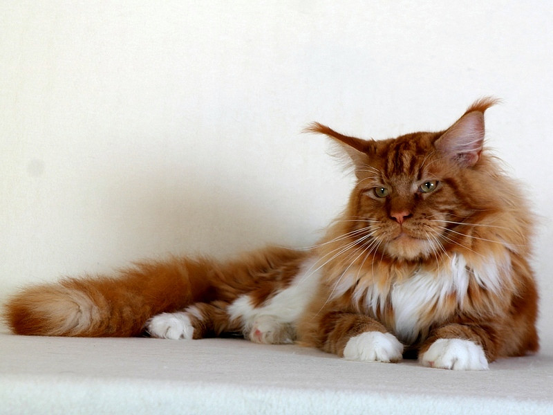

Шотландская вислоухая кошка
Шотландская вислоухая кошка — порода домашних кошек с очаровательной
внешностью и ласковым характером. Загнутые ушки и плюшевая шерсть
стали визитной карточкой породы. Цвет шерсти у шотландских вислоухих
кошек бывает различных окрасов с вариантами пятнистости. Встречаются
одноцветные, многоцветные и полосатые скоттиш-фолды.
read...

Мейн-кун
Мейн-кун – аборигенная порода американских кошек, характеризующаяся
крупными размерами и внушительной массой тела. Представители породы –
это надежные друзья и компаньоны, способные быстро завоевать любовь
всей семьи.read...